在撰写本文时，一个名为AlphaStar的新AI，一个深度强化学习 ( DRL )代理，使用模仿学习 ( IL )在玩实时策略游戏《星际争霸2》时以五比零击败了一个人类对手。AlphaStar是大卫·西尔弗和谷歌DeepMind工作的延续，旨在建立一个更聪明、更智能的人工智能。AlphaStar用来获胜的具体技术可以写一本书，IL和学习模仿人类游戏的使用现在引起了浓厚的兴趣。好在Unity已经以线下和线上训练场景的形式实现了IL。虽然我们不会在本章中达到AlphaStar的水平，但我们仍然会了解IL和其他形式的迁移学习的基础技术。
在这一章中，我们将看看在ML-agent中IL的实现，然后看看迁移学习的其他应用。我们将在本章中讨论以下主题:
尽管AlphaStar在一场RTS游戏中击败了一名人类职业玩家，取得了惊人的战术胜利，但它仍然因其使用的游戏类型和动作受到了审查。许多人类玩家表示，人工智能的战术能力显然更胜一筹，但整体战略和规划却糟糕透顶。看看谷歌DeepMind如何应对这种批评应该很有趣。
这将是令人兴奋的一章，并将为你未来的发展提供大量的培训机会，这些都将在下一节开始。
IL，或行为克隆，是从一个人或另一个人工智能获取观察和动作，并用作训练智能体的输入的过程。代理本质上由人类引导，并通过他们的行为和观察来学习。一组学习观察可以通过实时游戏(在线)接收，或者从保存的游戏中提取(离线)。这提供了从多个代理捕捉游戏并一前一后或单独训练他们的能力。IL提供了训练或者实际上编程代理的能力，这些任务你可能发现使用常规的RL是不可能训练的，正因为如此，它很可能成为一种关键的RL技术，在不久的将来，我们将在大多数任务中使用它。
在你看到没有它时的情况之前，很难衡量某样东西给你带来的价值。记住这一点，我们将首先看一个不使用IL，但肯定可以从中受益的例子。打开Unity编辑器，并遵循以下练习:
在Academy上将控制设置为启用
mlagents-learn config/trainer_config.yaml --run-id=tennis --train
只看第一个例子，你就会发现普通的培训和我们所看到的其他高级方法，如课程和好奇心学习，很难实施，在这种情况下可能会适得其反。在下一节中，我们将研究如何在在线培训模式下使用IL运行这个示例。
在线模仿学习是你教代理实时学习一个玩家或另一个代理的观察。这也是训练代理或机器人最有趣、最吸引人的方式之一。在下一个练习中，让我们开始为在线模仿学习设置网球环境:
TennisLearning:
trainer: online_bc
max_steps: 10000
summary_freq: 1000
brain_to_imitate: TennisPlayer
batch_size: 16
batches_per_epoch: 5
num_layers: 4
hidden_units: 64
use_recurrent: false
sequence_length: 16
mlagents-learn config/online_bc_config.yaml --run-id=tennis_il --train --slow
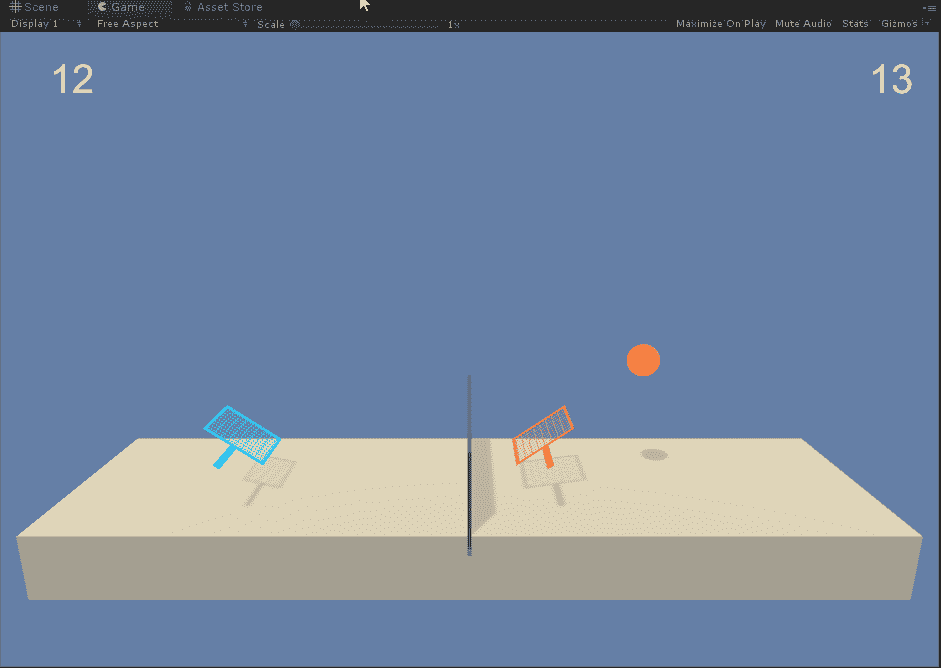
用IL玩和教代理
在玩最后一个练习的时候，你可能想知道为什么我们不这样训练所有的RL代理。很好的问题，但是你可以想象，这要看情况。虽然IL非常强大，是一个相当有能力的学习者，但它并不总是做我们期望它做的事情。此外，一个IL代理只会学习它所显示的搜索空间(观察值),并保持在这些限制内。在AlphaStar的情况下，IL是训练的主要输入，但该团队也提到，AI确实有足够的时间自我发挥，这可能解释了它的许多获胜策略。因此，虽然IL很酷，也很强大，但它不是解决我们所有RL问题的金鹅。然而，在这个练习之后，你可能会对RL，尤其是IL，有一个新的更大的评价。在下一节中，我们将探索如何使用离线IL。
离线训练是从玩游戏或执行任务的玩家或代理生成记录的游戏性文件，然后作为训练观察反馈，以帮助代理稍后学习。虽然在线学习肯定更有趣，而且在某些方面更适用于网球或其他多人游戏，但它不太实用。毕竟你一般需要实时打一个代理几个小时，一个代理才会变好。同样，在在线培训场景中，您通常仅限于单个代理培训，而在离线培训中，可以将演示回放提供给多个代理，以便更好地进行整体学习。这也允许我们执行有趣的训练场景，类似于AlphaStar训练，我们可以教会一个代理，以便它可以教会其他代理。
我们将在第十一章、构建多智能体环境中学习更多关于多智能体游戏的知识。
在下一个练习中，我们将重温我们的老朋友走廊/可视走廊的例子。同样，我们这样做是为了将我们的结果与之前在此环境下运行的示例练习进行比较。按照本练习设置新的离线培训课程:
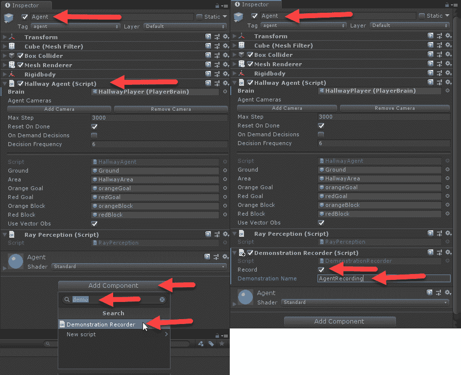
添加演示记录器
玩完游戏后，您应该会看到在项目窗口的资产根文件夹中创建了一个名为“演示”的新文件夹。文件夹里是你的演示录音。这是我们将在下一部分提供给代理的录音。
现在我们有了演示录音，我们可以在培训部分做更多的工作。但是，这一次，我们将向多个环境中的多个代理回放我们的观察文件。打开走廊/visual hallow示例场景，并按照下一个练习进行训练设置:
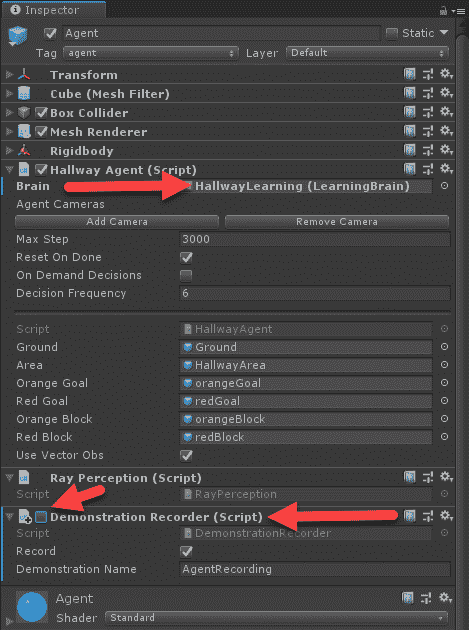
设置代理组件
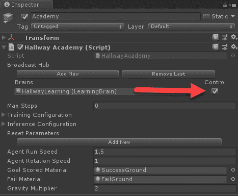
让学院能够控制大脑
现在我们已经为代理学习配置了场景，我们可以在下一节继续为代理喂食。
当我们在网上表演IL时，我们在网球场景中一次只喂一个特工。但是，这一次，我们将从同一个演示录音中训练多个代理，以提高训练效果。
我们已经为培训做好了准备，所以让我们在下面的练习中开始喂养代理:
default:
trainer: offline_bc
batch_size: 64
summary_freq: 1000
max_steps: 5.0e4
batches_per_epoch: 10
use_recurrent: false
hidden_units: 128
learning_rate: 3.0e-4
num_layers: 2
sequence_length: 32
memory_size: 256
demo_path: ./UnitySDK/Assets/Demonstrations/<Your_Demo_File>.demo
HallwayLearning:
trainer: offline_bc
max_steps: 5.0e5
num_epoch: 5
batch_size: 64
batches_per_epoch: 5
num_layers: 2
hidden_units: 128
sequence_length: 16
use_recurrent: true
memory_size: 256
sequence_length: 32
demo_path: ./UnitySDK/Assets/Demonstrations/demo.demo
HallwayLearning:
trainer: offline_bc
max_steps: 5.0e5
num_epoch: 5
batch_size: 64
batches_per_epoch: 5
num_layers: 2
hidden_units: 128
sequence_length: 16
use_recurrent: true
memory_size: 256
sequence_length: 32
demo_path: ./UnitySDK/Assets/Demonstrations/AgentRecording.demo
mlagents-learn config/offline_bc_config.yaml --run-id=hallway_il --train
RL可以被认为是学习的蛮力方法，而模仿学习和通过观察进行训练的细化显然将主导代理训练的未来。当然，这真的有什么奇怪的吗？毕竟，我们简单的人类就是这样学习的。
在下一部分，我们将关注深度学习的另一个令人兴奋的领域，迁移学习，以及它如何应用于游戏和DRL。
模仿学习，顾名思义，属于迁移学习 ( TL )的范畴。我们可以把迁移学习定义为这样一个过程，通过这一过程，一个代理或DL网络通过从一个到另一个的经验迁移而得到训练。这可以像我们刚刚执行的观察训练一样简单，也可以像在代理的大脑中交换层/层权重一样复杂，或者只是训练代理完成类似的任务。
在转移学习中，我们需要确保我们使用的经验或以前的权重是通用的。通过本书的基础章节(第1-3章),我们学习了使用诸如丢弃和批量标准化等技术进行一般化的价值。我们了解到这些技术对于更一般的训练很重要；允许代理/网络更好地推断测试数据的培训形式。这与我们使用一个在一项任务上受过训练的代理来学习另一项任务没有什么不同。实际上，一个更通用的代理将比一个专业代理更容易传递知识。
我们可以用一个简单的例子来证明这一点，从训练以下简单的练习开始:
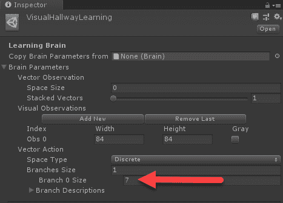
增加代理的向量动作空间
mlagents-learn config/trainer_config.yaml --run-id=vishall --train --save-freq=10000
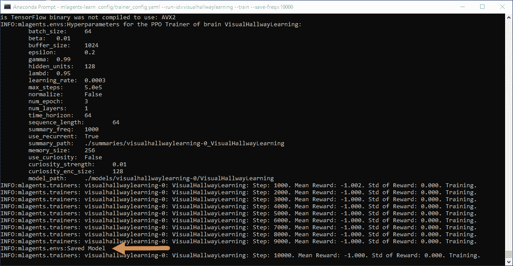
ML-代理培训师创建检查点
当你终止了训练，是时候在下一节的另一个学习环境中尝试这个节省下来的大脑了。
我们现在想把我们刚刚训练过的大脑放在一个新的但相似的环境中重新使用。由于我们的代理使用视觉观察，这使得我们的任务更容易，但是您也可以尝试使用其他代理来执行此示例。
让我们打开Unity并导航到VisualPushBlock示例场景，然后进行以下练习:
手动更改模型路径
VisualHallwayLearning:
use_recurrent: true
sequence_length: 64
num_layers: 1
hidden_units: 128
memory_size: 256
beta: 1.0e-2
gamma: 0.99
num_epoch: 3
buffer_size: 1024
batch_size: 64
max_steps: 5.0e5
summary_freq: 1000
time_horizon: 64
VisualPushBlockLearning:
use_recurrent: true
sequence_length: 64
num_layers: 1
hidden_units: 128
memory_size: 256
beta: 1.0e-2
gamma: 0.99
num_epoch: 3
buffer_size: 1024
batch_size: 64
max_steps: 5.0e5
summary_freq: 1000
time_horizon: 64
mlagents-learn config/trainer_config.yaml --run-id=vishall --train --save-freq=10000 --load
现在，在本例中，即使我们已经培训代理完成VisualHallway，这可能也不会非常有效地将知识转移到VisualPushBlock。出于这个例子的目的，我们选择了两者，因为它们非常相似，并且将一个经过训练的大脑转移到另一个大脑不太复杂。出于你自己的目的，能够转移受过训练的大脑可能更多的是在新的或修改的水平上重新训练代理人，甚至可能允许代理人在逐渐更困难的水平上训练。
根据您的ML-Agents版本的不同，这个例子可能工作得很好，也可能不太好。特别的问题是模型的复杂性、超参数的数量、输入空间和我们正在运行的奖励系统。保持所有这些因素不变也需要对细节的高度关注。在下一节中，我们将花点时间来探索这些模型有多复杂。
TensorFlow正迅速成为支持大多数深度学习基础设施的底层图形计算引擎。虽然我们还没有详细介绍这些图形引擎是如何构建的，但直观地回顾一下这些张量流模型可能会有所帮助。我们不仅可以开始更好地欣赏这些系统的复杂性，而且一个好的视觉效果往往胜过千言万语。让我们打开web浏览器，进行下一个练习:
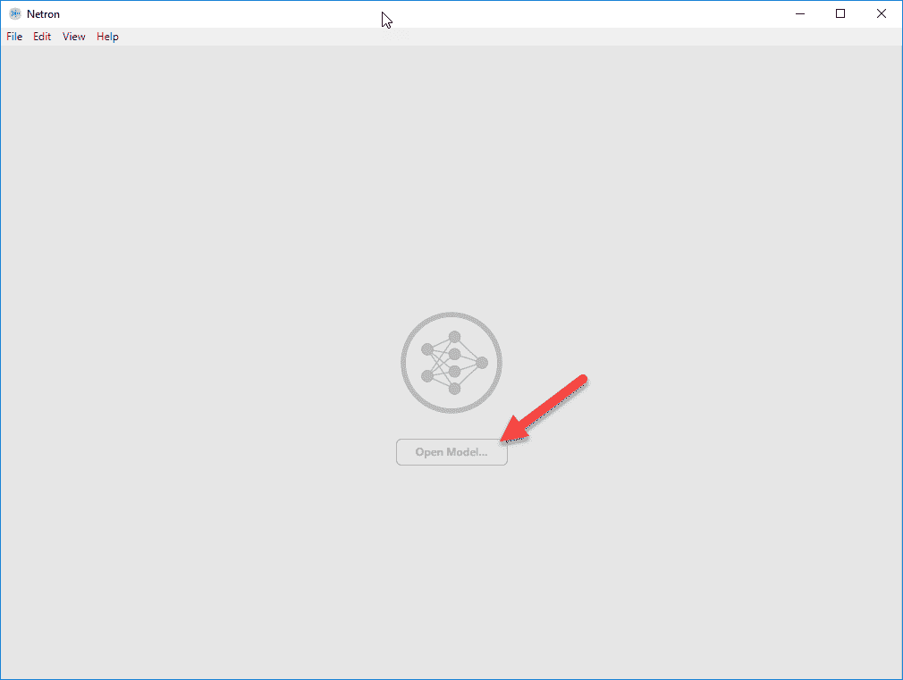
Netron应用程序
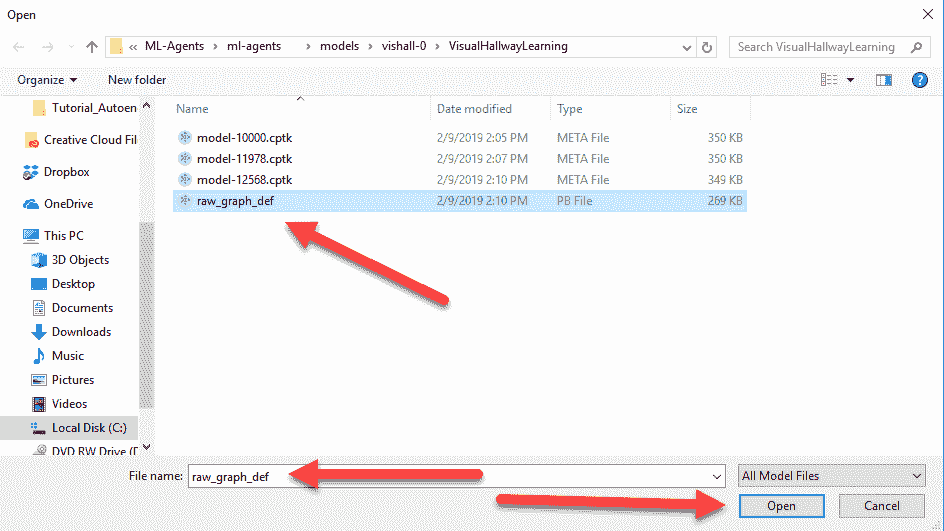
选择要加载的模型图定义
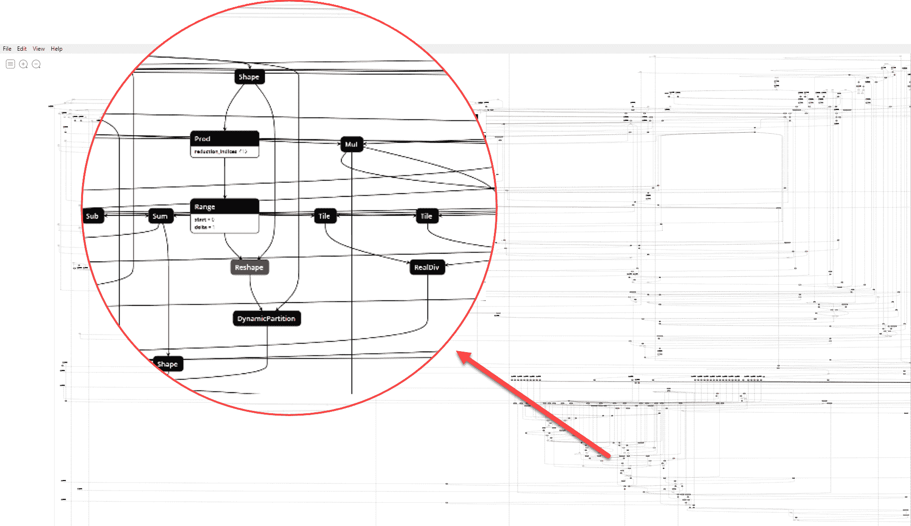
我们代理人大脑的张量流图模型
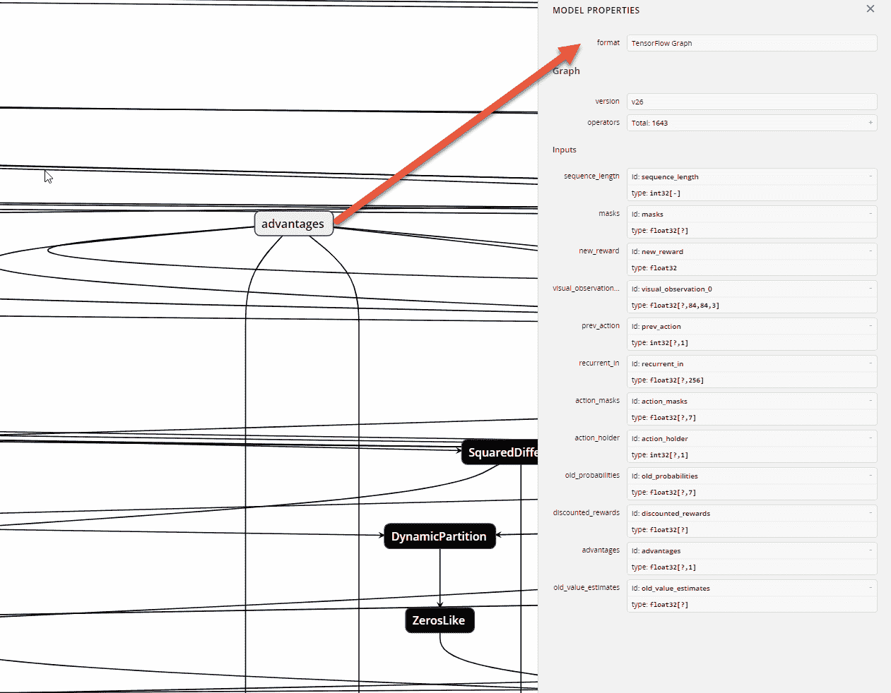
优势图模型的属性
完成后，可以随意查看其他模型，甚至可以探索Unity之外的其他模型。虽然这个工具不太能够像我们一样总结一个复杂的模型，但它确实显示了这些类型的工具变得多么强大。更重要的是，如果你能找到周围的路，你甚至可以导出变量供以后检查或使用。
模仿学习的一个问题是，它经常使代理人走上一条限制其未来可能行动的道路。这与你被告知执行一项任务的不适当的方法，然后就那样做了，也许没有思考，只是后来发现有一个更好的方法。事实上，人类在历史上一次又一次地倾向于这种类型的问题。也许你小时候就知道刚吃完饭就游泳是危险的，但后来通过你自己的实验或常识才知道，那只是一个神话，一个在很长一段时间里被当作事实的神话。通过观察来训练一个代理没什么不同，你在很多方面限制了代理的视野，使其局限于一个狭窄的焦点，这个焦点受到了所学内容的限制。然而，有一种方法允许代理回复到部分蛮力或试错探索，以便扩展其训练。
有了ML-agent，我们可以将IL与一种迁移学习的形式结合起来，以允许agent首先从观察中学习，然后通过向曾经的学生学习来进一步训练。如果您愿意，这种形式的IL链接允许您训练一个代理自动训练多个代理。让我们将Unity开放给TennisIL场景，然后进行下一个练习:
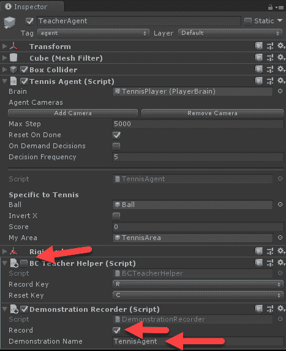
检查BC教师是否连接到代理
mlagents-learn config/online_bc_config.yaml --run-id=tennis_il --train --slow
这不仅会训练代理，这很好，而且还会创建一个演示录音回放，我们可以用它来进一步训练代理，以学习如何以类似于训练AlphaStar的方式互相扮演。在下一节中，我们将设置我们的网球场景，使其在离线训练模式下运行，并有多个代理。
现在，有了我们打网球的录音，我们可以用它来训练多个代理人，反馈到一个政策中。将Unity打开到网球场景，即具有多个环境的场景，然后进行下一个练习:
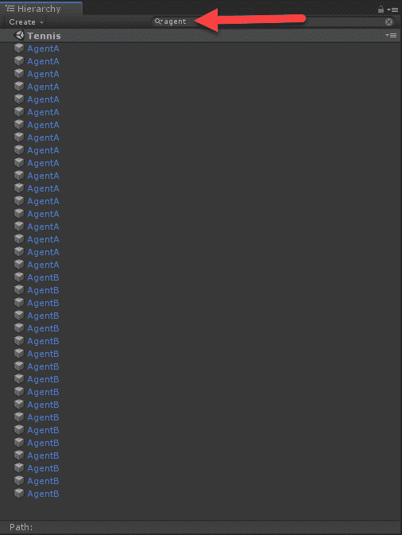
搜索场景中的所有代理
TennisLearning:
trainer: offline_bc
max_steps: 5.0e5
num_epoch: 5
batch_size: 64
batches_per_epoch: 5
num_layers: 2
hidden_units: 128
sequence_length: 16
use_recurrent: true
memory_size: 256
sequence_length: 32
demo_path: ./UnitySDK/Assets/Demonstrations/TennisAgent.demo
mlagents-learn config/offline_bc_config.yaml --run-id=tennis_ma --train
有多种方法可以执行这种类型的IL和transfer learningchaining，这将使您的代理在培训中具有一定的灵活性。您甚至可以在没有IL的情况下使用已训练模型的检查点，并像我们之前所做的那样运行具有迁移学习的代理。可能性是无限的，什么将成为最佳实践还有待观察。
在下一节中，我们将提供一些练习，供您个人学习使用。
本章末尾的练习可能会提供几个小时的乐趣。试着只完成一两个练习，因为我们还需要完成这本书:
请记住，如果你正在尝试任何迁移学习练习，在匹配复杂的图表时，注意细节是很重要的。在下一节中，我们将总结本章所讲的内容。
在这一章中，我们介绍了RL中的一种新兴技术，称为模仿学习或行为克隆。正如我们所了解的，这种技术获取玩家玩游戏的观察结果，然后在在线或离线环境中使用这些观察结果来进一步训练代理。我们进一步了解到，IL只是迁移学习的一种形式。然后，我们介绍了一种使用ML-Agents的技术，这种技术可以让你跨环境转移大脑。最后，我们研究了如何将IL和迁移学习联系起来，作为一种刺激代理训练自己开发新策略的方式。
在下一章中，我们将通过观察多个代理训练场景来进一步理解游戏中的DRL。